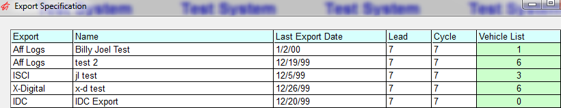
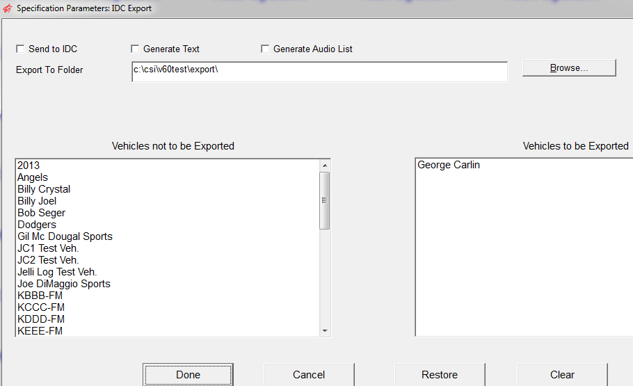
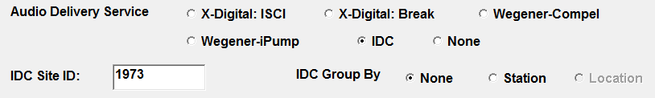

IDC
The Counterpoint IDC Export produces a file that tells the IDC system (International Datacasting Corp) what split copy to air.
When the IDC file is created, it checks to see that the regional (split) copy mp3 files are on the server. To ensure a successful Send to IDC file, the Generate Audio List will compare the two directories where the regional mp3 files are kept and produce a list of any regional mp3 files that are not on the IDC server.
Any MP3 files missing from the IDC directory must be corrected before a successful Send to IDC file is created.
Setup
XML.INI
The XML.ini is located in the data directory.
Add the IDC URL to this file. Ex: URL = http://###.##.###.###/PMWebService/(password)
[IDC]
URL = http://193.168.40.200/PMWebService/PMWSDL.asmx
IDC can switch to a backup URL if the main URL goes down for any reason. To switch URLs, a second URL backup field line must be added to the XML.INI. If the second line is not entered, the export will still function, it just will not run the backup URL system.
To enable the backup URL add the additional line to the XML.INI:
[IDC]
URL = http://193.168.40.200/PMWebService/PMWSDL.asmx
Backup = http://193.168.40.202/PMWebService/PMWSDL.asmx
Programming -> Avails
Audio Delivery System = Yes, allows spots in avails with this ‘avail name’ to be exported
Audio Delivery System = No, then spots in avails with this ‘avail name’ will not be exported
Affiliate -> Export Specifications
The Vehicles that are going to use IDC must be defined in the Export>Specifications Screen
Select the Vehicles

- Define the last date that was exported.
- Define the lead time. Lead time is the number of days between the date you want to export and the date you are exporting. For example if today is Wednesday and you want to export Monday the lead would be 5 (Wednesday, Thursday, Friday, Saturday, and Sunday).
- Define the cycle. Cycle is the number of days that will be exported
- Press Tab

- Send to IDC: will send your audio information directly to IDC based on the XML.INI definitions. You can verify the export by reading the results in the CSI\Prod\Data\Messages folder.
- Generate CSV: will create a CSV file that can be easily viewed to see what was sent to IDC> The file is stored in the CSI\Prod\Export folder.
- Generate Audio List: will create a txt file that lists any MP3 files that need to be added to the IDC directory location. For any advertisers listed, move those MP3 files to the IDC server. If there are no advertisers listed, you can continue with the Send to IDC.
Select the folder to which you want to save your files (generally CSI\Prod\Export).
Affiliate Agreements
Define the Site ID for each affiliate agreement that will be receiving regional copy information from IDC.
Note: Site ID is not by individual station. One IDC receiver/head end can be used by many stations. If multiple stations are sharing a Site ID, and have duplicate times on the same vehicle, only one export file will be created.
Agreement Delivery Tab
In the Delivery tab, indicate IDC is the delivery service, and enter the IDC Site ID and Group information.

Test User Setup
Run a week that doesn’t have data to send. If you get to the message “There are no generic ISCIs to send or delete”, then Counterpoint successfully connected to IDC.
General Procedures
- Choose option: Generate Audio List
- Enter the Export start date and number of days
- Select all vehicles
- Select all stations, select Export
- An IDC Region….txt is created that shows any MP3 files that need to be added to the IDC directory location. For any advertisers listed, move those MP3 files to the IDC server. If there are no advertisers listed, you can continue with the Send to IDC.
- Change the setting from Generate Audio List to Send to IDC. Select Export.
- Verify the results by viewing the Affiliate -> Accessories -> Messages to see the results of the export.
- Another way to verify the export is to export to CSV. When this option is selected, an IDC….csv file is created in the CSI\Prod\Export directory. This shows the contents of what was sent to IDC.
Export Log Files
The IDC Export generates and stores several log files: IDCExportLog, IDCDebugLog, IDC_Region_ISCI_Log, and IDC_Facts_Log. The Export and DeBug Logs are stored in the CSI\Prod\Data\Messages folder, and the Region ISCI and Facts Logs are stored in the CSI\Prod\Export folder.
- When created, each file will include the file name and today’s date, i.e. IDCExportLog13_10_9
- If the export is regenerated on the same day, the file will append the additional information to the end of the existing file
- The files are stored for a set amount of time, then deleted when the Export is generated
- IDCEXPORTLOG- 7 Days
- IDCDebugLog – 7 Days
- IDC_Region_ISCI_Log- 60 Days
- IDC_Facts_Log- 60 Days
Export Messages
- Message: “Problems with Send to IDC: Could not find csiNetUtilities”. ‘Send to IDC’ depends on csiNetUtilities.dll, which is installed by csiClientInstall.msi. This message means the dll is missing, or it does not match the version needed by affiliate
- Message “Problems with Send to IDC: Could not read values from xml.ini” Missing needed xml.ini info
- Message “Problems with Send to IDC: Could not write to IDC server” Problem with ‘sendToIdc’ call Counterpoint support.
“Did not send all generics to IDC…”
- “There are no generic ISCI to send or delete.” Nothing to send or create. This is a function of the export start date and # of days. If there are no generics to replace in that time period, nothing is sent. Also, nothing to delete, which is independent of date and # of days
- No additional message? Look in the list box for : “Sending to IDC failed for generic….” Did not get ID back from IDC server for this generic. Probably not received.
- “Sending to IDC failed for generic ABC: Action 1: Files [\\127.0.0.1\Content\x3S018B16.MP3] do not exist.” Sending a file name that doesn’t currently exist on the IDC server will fail.
Reports
The Affiliate Agreement Report shows the IDC Codes when Export Codes option is selected.
When Export Codes are selected, the format of the report changes and the DMA Market Rank and Owner is listed for each station.